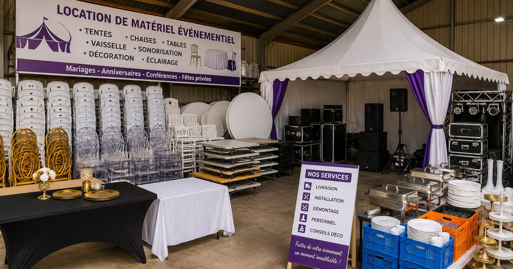

Practical business advice for small business owners in Cameroon — in English and French.
42 articlesShowing 42 of 42 articles
MTN MoMo and Orange Money are how most Cameroonians pay. Here is how to set it up correctly, verify every payment, and track every franc automatically.
Rendez-vous, stocks, personnel, finances — voici comment gérer votre salon de beauté de façon professionnelle et rentable au Cameroun.
A complete, practical guide for first-time entrepreneurs — from validating your idea to registering your business and building your first customer base.
Coûts matière, stocks, personnel, trésorerie — voici comment gérer votre établissement de restauration de façon rentable et durable.
Free, already on most phones, and almost entirely underused. Here is exactly how to set up WhatsApp Business and use it to sell more every day.
Stocks, prix, clients, personnel, finances — voici comment gérer votre boutique de vêtements de façon professionnelle et rentable.
Most small businesses in Cameroon stay small — not because of bad products, but because the owner never builds the systems that make growth possible.
La plupart des PME camerounaises ferment à cause d'erreurs évitables — des erreurs qui se voient des mois à l'avance si on sait où regarder.
One of the biggest decisions a small business owner makes. Here is exactly how to do it right — and protect your business from day one.
Attirer un nouveau client coûte cinq fois plus cher que de garder un client existant. Voici comment inverser cette logique.
Cash flow problems are the number one reason small businesses in Cameroon close — not lack of customers, not bad products.
Une mauvaise gestion des stocks coûte des millions aux PME camerounaises chaque année. Voici comment reprendre le contrôle.
Adding staff is supposed to help your business grow. But without the right systems, more employees means more risk.
Recruter du personnel est censé aider votre entreprise à croître. Mais sans les bons systèmes, plus d'employés signifie plus de risques.
Mixing personal and business money is the most common financial mistake small business owners in Cameroon make.
Mélanger l'argent personnel et professionnel est l'erreur financière la plus courante des gérants de PME au Cameroun.
A service catalogue is one of the most underused growth tools for small businesses in Cameroon.
Un catalogue de prestations est l'un des outils de croissance les plus sous-utilisés par les PME camerounaises.
Selling on credit is unavoidable in Cameroon. But untracked credit destroys cash flow silently.
Vendre à crédit est inévitable au Cameroun. Mais un crédit non suivi détruit la trésorerie en silence.
A professional receipt builds customer trust, reduces disputes, and makes your business look serious.
Un reçu professionnel renforce la confiance client, réduit les litiges et donne une image sérieuse à votre entreprise.

Rental businesses are growing fast in Cameroon. Without the right systems, rentals become a cash flow nightmare.
Les entreprises de location croissent rapidement au Cameroun. Sans systèmes adaptés, la location devient un cauchemar de trésorerie.
Most small business theft in Cameroon happens quietly — unrecorded sales, below-price selling, stock that disappears.
La plupart des pertes dans les PME camerounaises viennent des ventes non enregistrées et des prix bradés.
WhatsApp is the most used business communication tool in Cameroon. The businesses that grow use it proactively.
WhatsApp est le principal outil de communication commerciale au Cameroun.
Many business owners in Cameroon confuse being busy with being profitable.
Beaucoup de gérants au Cameroun confondent être occupé avec être rentable.
Most small business owners in Cameroon price by feel. Without calculating your real cost, you can lose money.
La plupart des gérants fixent leurs prix à l'instinct. Sans calculer votre coût réel, vous pouvez perdre de l'argent.
Orange Money and MTN MoMo have transformed how Cameroonians pay. Every unrecorded payment is money that disappears.
Orange Money et MTN MoMo ont transformé la façon dont les Camerounais paient.
Getting a new customer is expensive. Keeping an existing one is almost free.
Acquérir un nouveau client coûte cher. Fidéliser un client existant est presque gratuit.
If your customers still book by calling you directly, you are losing appointments you never knew about.
Si vos clients réservent encore en vous appelant, vous perdez des rendez-vous sans même le savoir.
Banks don't say no because you're not profitable. They say no because you can't prove it.
Les banques ne disent pas non car vous n'êtes pas rentable. Elles disent non car vous ne pouvez pas le prouver.
A notebook seems free. But the hidden costs of running your business without a proper system add up to far more than any software subscription.
Un carnet semble gratuit. Mais les coûts cachés sont bien plus élevés que n'importe quel abonnement logiciel.